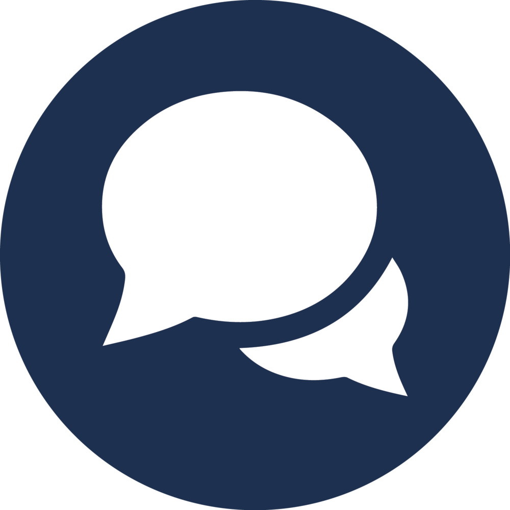
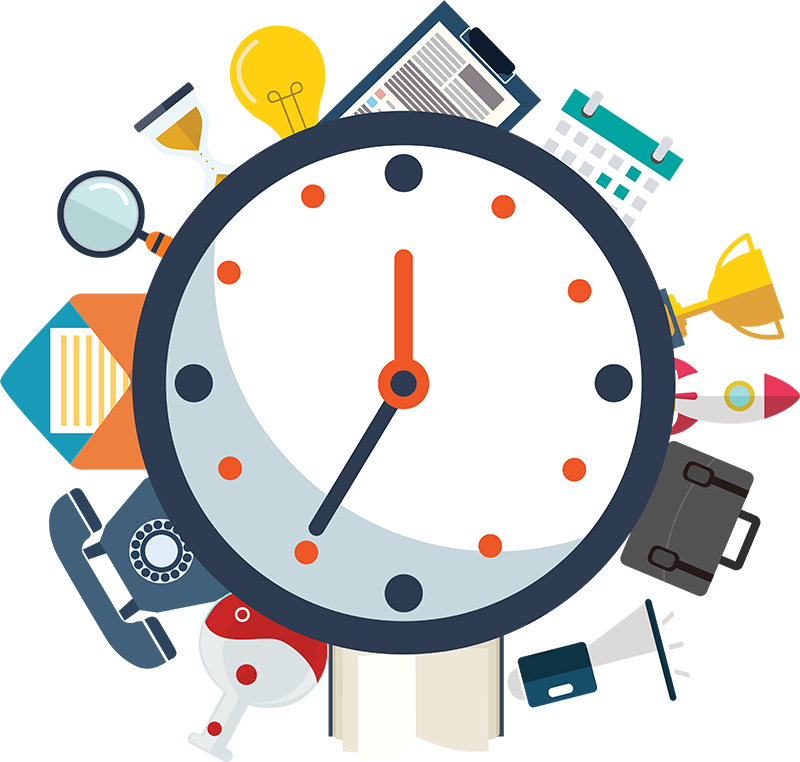
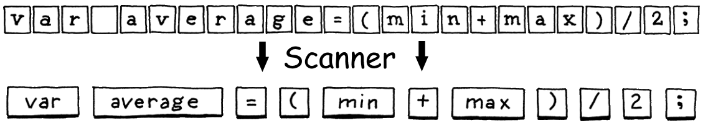
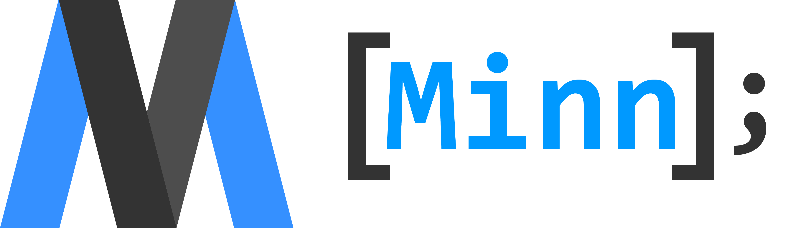

Project Description
I plan to create a lightweight and educational programming language with C-family syntax used for prototyping applications and learning programming concepts. I plan to use Java and C to make my scanner, parser, and interpreter.


Technology Needed
Github - VCS, code sharing, and website hosting
IntelliJ - main IDE and project manager for Java/C
VS Code - simpler editor for prototyping and website work
Project Objectives
- Greatly improve mastery of C-familiy languages
- Learn about the anatomy/design of programming languages
- Help me decide if I want to pursue CS as a career
- Improve communication skills related to technical topics
- Develop efficient time management and planning skills for long term projects
 

Areas of Reseach
Programming language concepts (scope, classes, variables, etc.)
Niche syntax and the programming language pipeline (i.e. RegEx, scanners, parsers, and interpreters)
Final Presentation
My final presentation will talk about the basic things necessary to build a language, a tour of my website, and examples of documentation.
During my presentation I’ll do a side by side comparison of a simple program such as a calculator in multiple languages (for example, Java, C/C++, my language, and Python) to show where it stands between them to highlight benefits of my language and acknowledge drawbacks.
We’ll know if my project is a success if simple programs can be written quickly by new programmers using the support my website provides. To test this, I’ll have an interactive segment of my presentation where someone with little to no programming experience can download my language and write a “hello world” program using my documentation in 5 minutes or less.
My Logo
My logo is in theme with many other programming language logos by being tied to the name (like Ruby, Python, and Java), so I decided on an interseting looking "M".
The name Minn comes from the Roman god of wisdom, education, and strategy Minerva. The color blue represents intelligence and learning while dark gray is a very modern color. Finally, I use the font consolas, brackets, and a semicolon to relate back to my programming themed project.
October
Week 1
10/8 - Learn how to set up the Git repo. Install IntelliJ and learn the basic functions.
10/10 - Reseach the parts of a language to get a better grasp on the concepts.
Week 2
10/21 - Reseach to make a list of basic distinctions in my language (data types, null, etc.)
10/23 - Refamiliarize myself with Java syntax. Reseach string and file interpreting functions.
10/25 - Research into C sytax, learn variables, functions, loops, and classes.
Week 3
10/29 - Research and understand basic principles of pointers in C, including function pointers.
11/1 - Reseach the structure and purpose of a scanner. Find examples in Java/C.
November
Week 1
11/5 - Research regex, lexemes, and tokens to start making a scanner.
11/7 - Build a prototype scanner and reserach any confusing attributes.
Week 2
11/11 - Go into depth on C style syntax and best-practices (doesn't have to be C, just C-style).
11/13 - Continue research if needed, otherwise compile a list of basic syntax rules for my language.
11/15 - Reseach on benefits and drawbacks of OOP and passive or active memory management.
Week 3
11/19 - Build upon previous lists with more complex langauge syntax and style decisions.
11/21 - Improve the scanner by adding more expressions, keywords, and language syntax.
Week 4
11/25 - Learn what context free grammar is and how it works.
11/27 - Job Shadow.
December
Week 1
12/2 - Continue research on CFG and start research on syntax trees. Experiment with examples.
12/4 - Continue CFG and syntax trees testing and reserach. Decide if they're right for my project.
12/6 - Continue improving the scanner with more keywords for all basic functions of a language.
Week 2
12/10 - Continue improving the scanner, or start reseraching parsers.
12/12 - Conitnue reseaching parsers - how they work and interact with scanners.
Week 3
12/16 - Touch up scanner, or read more on parsing.
12/17 - Shadow write-up due.
Week 4+
Winter Break - Build a prototype parser then relax or go for stretch goals.
January
Week 1
1/7 - Work on my presentation and practice talking points.
1/9 - Finish my presentation and practice once or twice more to fully prepare.
Week 2
Mid Year Presentations.
Week 3
1/20 - Reserach and work on parsing more, look into statements and state.
1/22 - Research environ- ments and possibly implement them if I have time.
1/24 - Continue research and implementation of enviorments and assignment.
Week 4
1/28 - Continue research and implementation of enviorments and assignment.
1/30 - Begin reserach on scope and decide how to implement it.
February
Week 1
2/3 - Reserach about scope, nesting, and shadowing. Implement them.
2/5 - Research control flow and start implementing.
2/7 - Finish implementing control flow for now in my project.
Week 2
2/11 - Project Progress with Advisor team (this may move depending on availability).
2/13 - If needed, adjust expectations of work and project based on the Advisor meeting.
Week 3
2/19 - Learn how, then implement basic functions into my language.
2/21 - Work on connecting functions with scope and error reporting.
Week 4
2/25 - ACT Testing Day.
2/27 - Reseach class implementation for my language.
March
Week 1
3/2 - Continue reserach on class implementation and begin to program them in.
3/4 - Finish class implementation for my language.
3/6 - Greatly improve error reporting for my langauge.
Week 2
3/10 - Improve the memory management of my language (automatic or manual, whichever I chose).
3/12 - Poll people on the language and ask for suggestions on how to improve the language overall.
Week 3
Spring Break - Relax, catch up, or go for stretch goals.
Week 4
3/23 - Implement the basic suggestions that people I polled had for me.
3/25 - Reseach and work more on my code generation.
3/27 - Reseach the implementation of inheritance.
Week 5
3/31 - Begin to implement basic inheritance and reseach more if needed.
4/2 - Finish implementing inheritance. Work on error handiling if finished.
April
Week 1
Polish up my language, finish presentation, wrap things up.
Week 2
4/14 - SAT Day.
4/15 - Finish up my presentation, including code examples for language.
4/17 - Finalize the presentation and practice presenting. Make sure poster is ready.
Week 3
4/20 - Final Project Presentations.
4/21 - Final Project Presentations.